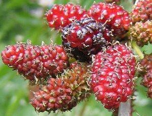

|
| Wie wird die Maulbeere genutzt?
Die Früchte der Schwarzen Maulbeere sind essbar.
Ihr Saft ist dunkelrot. Mit ihm wurde früher Rotwein dunkler gefärbt.
 | Die Weiße Maulbeere wird in China schon seit 4600 Jahren zur Seidenraupenzucht genutzt.
Seidenraupen fressen nur die Blätter der Weißen Maulbeere. Bevor sie sich in Schmetterlinge verwandeln, spinnen sie einen eiförmigen Kokon um sich. Dieser Kokon besteht aus Seidenfäden.
Diese Seidenfäden werden zu Stoffen und Kleidern verarbeitet.
|